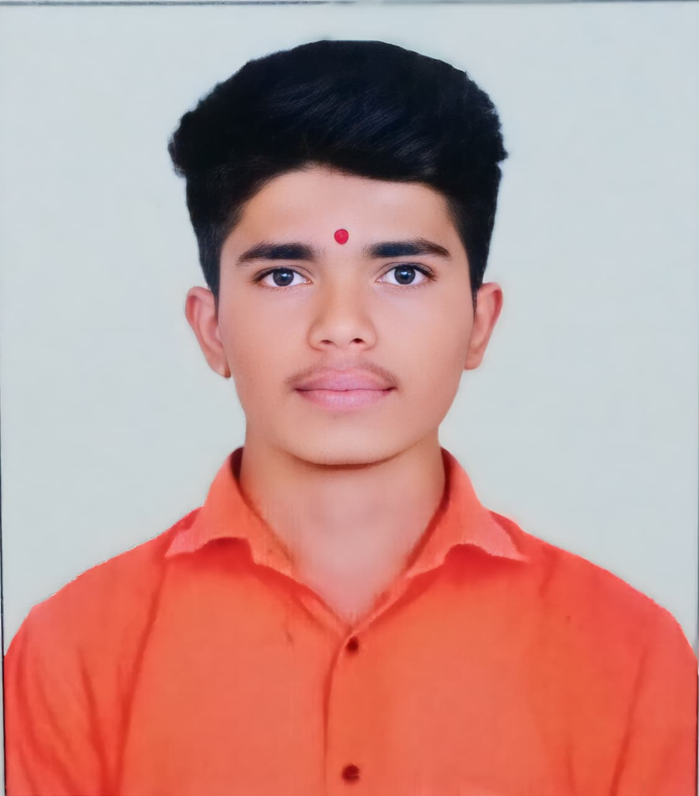

About Me
I am an Electronics & Computer B.E. student at SPPU, Pune. I have built hands-on experience with Kali Linux for ethical hacking and cybersecurity. My passion lies in Python development, network analysis using Nmap/Wireshark, and creating secure, automated systems.
Technical Expertise
Cybersecurity (Burp Suite, Nmap)
Frontend (React, Bootstrap)
Python & Scripting
Networking (TCP/IP, Wireshark)
Education
B.E. Electronics & Computer
SPPU, Pune | Sept 2024 - July 2028 | CGPA: 8.50
HSC (Science)
Chh. Sambhajinagar Divisional Board | 71.83%
SSC
Chh. Sambhajinagar Divisional Board | 85.80%
Experience
SNDCOE | Student
Yeola, Nashik | Sept 2024 - Present
Cybersecurity labs, Kali Linux, Nmap, Wireshark, Python Automation.
Featured Projects
Jarvis Voice Assistant
A Python-based voice assistant for system automation, speech recognition, and OS-level interaction.
PythonHTML/CSSAutomation
Certifications
- Digital Productivity - NIIT
- Design Thinking - A primer - IIT Madras
Get In Touch
Let's collaborate on your next big idea.
📍 Chhatrapati Sambhajinagar, Maharashtra 423702
📞 +91 9225538897